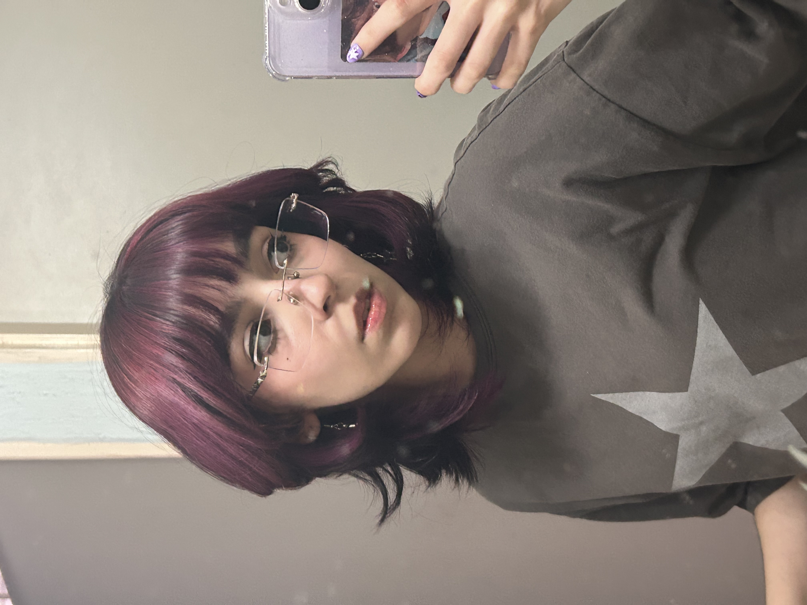

Victoria Villalba
20 years (virgo gurl)

About me
I was born on August 30th, 2005 in Ciudad Obregón in Sonora, México.
I'm the youngest daughter of two, i have an older brother. He's a software engineer too.
I am a computer programming technician !!!!
I consider myself a hardworker girl who's committed to the things i'm into it. (i'm such a perfectionist)
I've been into in the STEM area for more than 4 years, and i always discover new things to learn, so i think i'll never get bored of it.
Also i've been in some events related to STEM, like Technovation Girls contest and Patrones Hermosos bootcamp, where i teach young girls who are interested in technology and programming.
My work experience
Currently, i don't have any work experience :((
i'm working harder than ever to get in a good internship.
Education
-
Secondary:
Colegio Regional de México COREM (2017 - 2020)
I learned about robotics and basic computing in here. -
Highschool:
CBTis 37 (2020 - 2023)
I got the technician degree in computer programming. -
College:
Instituto Tecnológico de Sonora ITSON (2023 - )
I chose Software Engineering as my major because i already had some backround with tech, and i was into it too.
Languages i speak
- Spanish (it's my first language)
- English (B1+)